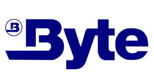

Trade Mark Journal No.2025/050 12 December 2025
UK00004303326 1 December 2025 (9,28)

- Class 9
- Electric-car charger; Battery chargers; Car charger; Chargers for batteries; Smartphone battery chargers; Chargers; Electric battery chargers; Wireless battery chargers; Solar battery chargers; Solar-powered battery chargers; USB chargers; Chargers for electric batteries; Battery compensation chargers; Cell phone battery chargers; Mobile phone battery chargers; Battery chargers for use with telephones; Anti-dust plugs for charger ports; Cell phone battery chargers for use in vehicles; Portable chargers; Battery chargers for laptop computers; Wireless chargers; Battery chargers for tablet computers; Joystick chargers; Battery chargers for mobile phones; Mains chargers; Battery charging equipment; Battery adapters; Portable power chargers; Chargers for cell phone; Battery chargers for electronic cigarettes; Rechargeable batteries; Rechargeable electric batteries; Mobile phone chargers; Chargers for vaporizers; USB chargers adapted for car cigarette lighter sockets; Chargers for smartphones; Solar-powered rechargeable batteries; Battery cables; Battery charge devices; Chargers for electric accumulators; Battery charging devices for motor vehicles; Batteries; Portable power supplies (rechargeable batteries); Chargers for electrical accumulators; USB chargers for electronic cigarettes; Adapter cables (Electric -); Electric adapter cables; Car batteries; Batteries, electric; Electric batteries; Electric charging cables; Charging appliances for rechargeable equipment; Adapter connectors (Electric -); Battery booster cables; Vaporizer batteries; Electric plug adapters; Adapter plugs; Electrical batteries; Chargers for mobile phones; Solar batteries; Galvanic batteries; Anode batteries; Battery packs; Chargeable batteries; Dry-cell batteries; Auxiliary battery packs; Batteries for phones; Battery terminals; Lithium batteries; Fast chargers for mobile devices; Ignition batteries; Ignition batteries ; Electric storage batteries; Battery chargers for home video game machines; Vehicle batteries; Adapter cables for headphones; Power packs [batteries]; Chargers for mobile telephones; Plates for batteries; Rechargers for electric accumulators; Travel adaptors for electric plugs; Battery boxes; Electrical cells and batteries; Nickel-cadmium batteries; Terminals for batteries; Auxiliary batteries for mobile phones; Anti-dust plugs for earphone jacks; Electrical storage batteries; Battery separators; Phone plugs; Connector sockets (Electric -); Charging docks; USB adapters; Wireless charging pads for smartphones; Mobile telephone batteries; Batteries for mobile phones; Chargers for electronic cigarettes; Plug adaptors; Electric adaptors; Adaptors (Electric -); Anti-dust plugs for cell phones; Batteries for electric vehicles; Electric batteries for vehicles; Batteries, electric, for vehicles; Nickel-cadmium storage batteries; Lithium ion batteries; Ethernet adapter; Shaver sockets (Electric -); Battery preheaters; Connector boxes (Electric -); USB flash drives with micro USB connectors compatible with mobile phones; Plug boxes [electric]; Grids for batteries; Power adapters for use in vehicle lighter sockets; Dustproof plugs for jacks of mobile phones; Electric plugs; Plugs [electric]; Sockets, plugs and other contacts [electric connectors]; Converters for electric plugs; Rechargeable cells; Batteries for lighting; Lighting (Batteries for -); Power units [batteries]; Accumulators [batteries]; Battery testers; Electric batteries for powering electric vehicles; USB cables; Dry batteries; Cables and wires; Coaxial cables; Cables (Coaxial -); Ethernet cables; Electrical cables; Cable splices for electric cables; Cables for earthing; Fibre-optic cables; Jumper cables; Antenna cables; Electric wires and cables; Electric cables and wires; Microphone cables; Cable junctions for electric cables; Modem cables; Audio cables; Telecommunications cables; Jack cables; Optical cables; Power cables; Telecommunication cables; Loudspeaker cables; Connection cables; Thermocouple cables; Communications cables; Telephone cables; Network cables; Electrical cables for use in connections; Cable connectors; Electricity mains (Materials for -) [wires, cables]; Materials for electricity mains [wires, cables]; Electric cables; Cables, electric; Connecting electrical cables; Connections for electric cables; Computer cables; Electronic cables; Electrical cable connectors; Ignition cables; Guitar cables; Data cables; Male connectors for electrical cables; Ducting for electric cables; Video cables; Printer cables; Feeder cables; Coaxial cable connectors; Junction sleeves for electrical cables; Extension cables; Booster cables; Audio cable connectors; Insulated electrical cables; Sheaths for electric cables; Jump cables; Power cables for projectors; USB cables for cellphones; Cable adapters; Earth cables; Measuring cables; Cable identification markers for electric cables; Conduit for electric cables; Optical fibre cables; Underwater power cables; Interface cables [electric]; Optical fiber cables; Threaded electrical cable connectors; Junction sleeves for electric cables; Cables (Junction sleeves for electric -); Sleeves (Junction -) for electric cables; Luminous USB cables; Fibre optic cables; Electrical cable; Insulated cables (Electric -); Insulated electric cables; Cable harnesses; Fiber optic cables; Coaxial cable; Electric extension cables; Cables for electrical signal transmission; Flexible sheaths for electric cables; Electrical cabling; Data transmission cables; Gender changers for coaxial cables; Metallic cables [electric]; Wire connectors [electricity]; Starter cables for motors; Cable modems; Coaxial cables incorporating filters; Apparatus, instruments and cables for electricity; Audio cable; Radio relay cables; Cables for optical signal transmission; Gaming software; Computer hardware for games and gaming; Computer gaming software; Computer software for the administration of on-line games and gaming; Gaming software that generates or displays wager outcomes of gaming machines; Computer application software featuring games and gaming; Computer games entertainment software; Electronic publications, downloadable, relating to games and gaming; Downloadable information relating to games and gaming; Interactive entertainment computer software for video games; Games software for use with video game consoles; Downloadable interactive entertainment software for playing computer games; Computer games; Computer game software for use with on-line interactive games; Interactive casino games provided through a computer or mobile platform; Downloadable interactive entertainment software for playing video games; Gambling software; Software for arcade video game machines; Interactive multimedia software for playing games; Audiovisual headsets for playing video games; Game programs for arcade video game machines; Monitors for arcade video game machines; Headsets for playing video games; Computer games software; Joysticks for use with computers, other than for video games; Computer software for entertainment; Virtual reality games software; Programs for arcade video game machines; Computer video game software; Downloadable software, namely virtual clothing for use in computer games; Downloadable computer games; Virtual reality headsets adapted for use in playing video games; Computer game software for use on mobile devices; Computer game software; Simulation software [entertainment]; Phone cases; Cell phone cases; Mobile phone cases; Mobile telephone cases; Cellular telephone cases; Carrying cases for cell phones; Cell phone covers; Protective cases for cell phones; Cases for mobile phones; Carrying cases for mobile phones; Carrying cases for cellular phones; Mobile phone covers; Protective cases for mobile phones; Waterproof smartphone cases; Cell phone straps; Leather cases for mobile phones; Leather cases for cellular phones; Waterproof cases for smart phones; Laptop cases; Mobile phone ring stands; Mobile phone ring holders; Carrying cases for mobile telephones; Camera cases; Mobile phone screen protectors; Carrying cases for cellular telephones; Mobile phone speakers; Mobile phone straps; Cases adapted for mobile phones; Cases for telephones; Waterproof camera cases; Tablet computer cases; Beeper carrying cases; Battery cases; Laptop carrying cases; Camcorder cases; Cell phones; Ring stands for cell phones; Mobile telephone covers; Hands-free headsets for cell phones; Camcorder waterproof cases; In-car telephone handset cradles; Phone extension leads; Ring holders for cell phones; Waterproof cases for smartphones; Hands-free holders for cell phones; Mobile phone display screen protectors in the nature of films; Notebook computer carrying cases; Computer cases; Contact lens cases; Cases for smartphone incorporating a keyboard; Carrying cases for mobile computers; Protective covers for cell phones; Computer carrying cases; Keyboard cases for smartphones; Phone extension jacks; Screen protectors for cell phones; Mobile telephone cases made of leather or imitations of leather; Hands-free microphones for cell phones; Hands-free kits for cell phones; Flip covers for cellular phones; Memory card cases; Cases for headphones; Mobile phone connectors for vehicles; Cases for smartphones; Flip covers for mobile phones; Downloadable ring tones for cell phones; Carrying cases for contact lenses; Holders for cell phones; Downloadable smart phone application software; Mobile phone docking stations; Protective cases for tablet computers; Protective cases for smartphones; Lanyards for cell phones; Cases for tablet computers; Video phones; Dashboard mats adapted for holding cell phones and smartphones; Cellular phones; Conference phones; Cases for PDAs; Leather cases for smartphones; Cases for contact lenses; Sunglass cases; Straps for telephone handsets; Desk or car mounted units incorporating a loudspeaker to allow a telephone handset to be used hands-free; VOIP phones; Leather cases for tablet computers; Telephone earpieces; Phone covers [specifically adapted]; Ear phones; Mobile phones; Cases for sunglasses; Computer components and parts; Parts and fittings for computers; Parts for spectacles; Straps for cellular phones; Component parts for aerials; Testing devices for electronic parts; Car telephone installations; Downloadable ring tones for mobile phones; Straps for mobile phones; Headphones; In-ear headphones; Earphones; Earbuds; Stereo headphones; Wireless headphones; Music headphones; Ear pads for headphones; Earphones for smartphones; Two-way plugs for headphones; Headphone amplifiers; Noise cancelling headphones; Headphones for smart phones; Headsets; Headphone consoles; Wireless headsets; Wireless headsets for cellphones; Binaural microphones; Wireless headsets for smartphones; Headsets for smartphones; Wireless speaker microphones; Wireless audio speakers; Earphones for cellular telephones; Headsets for use with computers; Personal headphones for sound transmitting apparatuses; Microphone plugs; Wireless headsets for smart phones; Headsets for telephones; Wireless headsets for tablet computers; Personal headphones for use with sound transmitting systems; Wireless speakers; Audio speakers; Speakers [audio equipment]; Wearable speakers; Earphones for use with mobile telecommunication devices; Wireless headsets for mobile phones; Microphones; Soundbar speakers; Audio speakers for automobiles; Stereo amplifiers; Portable speakers; Audio amplifiers; Portable vibration speakers; Telephone headsets; Audio speakers for home; Wireless headsets for use with mobile telephones; Audio speakers for vehicles; Dust proof plugs for earphone jacks; Audio speaker enclosures; Wearable audio equipment; Bone conduction earphones; Cords for sunglasses; Studio monitor loudspeakers; Headsets for mobile telephones; Earphones for handheld electronic game apparatus; Stereos; Earphones for consumer video game apparatus; Portable speaker docks; Sub-woofers; Keyboard amplifiers; Audio adaptors; Loudspeakers; Car speakers; Portable audio players; Speakers for computers; Loud speakers; Audio devices and radio receivers; Clip-on sunglasses; Speakers; Multi-room audio devices; Microphone buttons; Microphone mixers; Wireless audio and video receivers; Pairable wireless speakers; Monitor speakers; Audio cassettes; Cassettes [audio]; Hi-fi stereo systems; Audio frequency amplifiers; Sound amplifiers; Electronic microphone splitters; Microphones for communication devices; Electronic audio signal processors for compensating sound distortion in speakers; Signal processors for audio speakers; Automobile stereo adapters; Wireless keyboards; Audio loudspeaker systems; Audio discs; Stereo receivers; Ear plugs for divers; Audio transmitters; Portable digital audio broadcasting radios; Audio cassette player head cleaners; Auxiliary speakers for mobile phones; Portable digital audio broadcasting [DAB] radios; Optic discs carrying audio recordings; Audio cassette players; Audio cassette recorders; Audio equipment; Loudspeakers with built in amplifiers; Car stereos; Audio equalizers; Cassette head cleaners for audio tapes; Integrated audio amplifiers; Horns for loudspeakers; Speakers for portable media players; Audio recordings; Audio cable testers; Sound cassettes; Audio recording equipment; Listening devices for monitoring babies; Wristband computer devices; Portable radios; Wireless portable printers for use with laptops and mobile devices; Audio mixing desks; Cords for eyeglasses; Audio speaker systems for vehicles; Speaker enclosures; Smart speakers; Personal speakers; Speakers for record players; Speaker docks; Speaker switches; Speakers for video conferencing; Speaker mounting brackets; Thin film speakers; Subwoofers; Tweeters; Woofers; Soundbars; Public address speaker systems; Cabinets for loudspeakers; Loudspeaker cabinets; Cases for loudspeakers; Loudspeaker installations; Sound projectors; Loudspeaker housings; Racks for loudspeakers; Audio receivers; Loudspeaker systems; Sound mixers with integrated amplifiers; Audio mixers; Audio players; Hi-fi sound systems; Audio expanders; Speaking tubes; Subwoofers for vehicles; Electronic audio crossovers; Booms for microphones; Audio conference apparatus; Audio recorders; Stereo tuners; Pre-recorded audio cassettes featuring music; Loudspeaker stands; Warning loud speaker apparatus for mounting on the roof of emergency services vehicles; Audio tapes featuring music; Surround sound systems; Diaphragms [acoustics]; Audio books; Sound amplifiers for musical instruments; Sound amplifying receivers; Audio transmitter units; Sound reverberation units; Loudspeaker drive units; Speakerphones; Radio frequency amplifiers; Prerecorded audio tapes featuring music; Pre-recorded audio cassettes; Radio monitors for reproduction of sound and signals; Graphic decoders for use with audio karaoke systems; Sound recordings; Audio compressors; Laptops [computers]; Laptop computers; Netbooks [computers]; Netbook computers; 2-in-1 laptops; Convertible laptops; Sleeves for laptops; Hybrid laptops; Notebook computers; Touchpads for computers; Cooling pads for laptop computers; Laptop bags; Bags adapted for laptops; Tablet computers; Computers; Desktop computers; Cases adapted for netbook computers; Portable computers; Protective cases for laptops; Palmtop computers; Covers for tablet computers; Monitors for computers; Keyboards for smartphones; Mouses for computers; Computers (Printers for use with -); Printers for computers; Printers for use with computers; Mobile computers; Cases adapted for notebook computers; Adjustable desktop mounts for tablet computers; Stands adapted for laptops; Software for tablet computers; On-board computers; Laptop sleeves; Protective films for tablet computers; Downloadable wallpapers for computers and phones; Handheld computers; Wearable computers; Computer motherboards; Laptop covers; Computers for use with bicycles; All-in-one computers; Hand-held computers; Keyboards for tablets; Cases adapted for tablet computers; Computer touchscreens; Components for computers; Input devices for computers; Peripherals adapted for use with computers and other smart devices; Computers and computer hardware; Electronic notebooks; Mainframes [computers]; Interfaces for computers; Keyboards for mobile phones; Protective covers for tablet computers; Peripherals adapted for use with computers; Trackballs [computer peripherals]; Cooling pads for wireless computers; Computer chipsets; Smartphones; Pocket computers for note-taking; Screen filters for computers and televisions; Cameras for smartphones; Computer styluses; Computer whiteboards; Flip covers for tablet computers; Wireless computer peripherals; Computer keyboards; Anti-glare filters for televisions and computer monitors; Electronic components for computers; Stands adapted for tablet computers; Software for computers; Document printers for computers; Document printers for use with computers; Notebook computer cooling pads; Programs for computers; Computer mousepads; Computer peripherals; Wireless remote controls for portable electronic devices and computers; Add-on-cards for computers; Stick computers; Computer software for mobile phones; Wearable computer peripherals; Tablet computer; Computer hardware modules for use in Internet of Things electronic devices; Cartridges [software] for use with computers; Notebook PCs; Peripheral equipment for computers; Personal computers; Handheld personal computers; Computer software for communicating with users of hand-held computers; Foldable smartphones; CD drives for computers ; Laptop docking stations; Tablet monitors; Trip computers; Covers for computer keyboards; Computer hardware modules for use in electronic devices using the Internet of Things [IoT]; Software for smartphones; Mobile telephones; Braille mobile phones; Devices for hands-free use of mobile phones; Displays for mobile phones; Mobile telecommunications handsets; Downloadable ringtones for mobile phones; Mobile apps; Computer game software for use on mobile and cellular phones; Carriers adapted for mobile phones; Mobile radios; Straps for mobile telephones; Computer application software for mobile phones; Downloadable graphics for mobile phones; Lanyards for mobile telephones; Electronic game software for mobile phones; Dashboard mounts for mobile phones; Docking stations for mobile phones; Mobile telephones for use in vehicles; Downloadable emoticons for mobile telephones; Stands adapted for mobile phones; Digital cellular phones; Screen protectors for mobile telephones; Display modules for mobile phones; Local mobile telephone systems; Ring holders for mobile telephones; Batteries for use with mobile telecommunication devices; Downloadable software applications for mobile phones; Mobile software; Holders adapted for mobile phones; Downloadable ring tones for mobile telephones; Computer application software for mobile telephones; Ring stands for mobile telephones; Internet phones; Downloadable graphics for mobile telephones; Holders adapted for mobile telephones and smartphones; Protective films adapted for mobile phone screens; Dashboard mats adapted for holding mobile telephones and smartphones; Downloadable emoticons for cell phones; Computer software for cellular phones; Digital phones; Mobile or portable fax machines; Mobile communication terminals; Holders adapted for cell phones and smartphones; Downloadable graphics for cell phones; Smart phones; Electric mobile digital communication devices.
- Class 28
- Gaming machines for gambling; Gaming keyboards; Gaming machines; Gaming chips; Console gaming devices; Gaming apparatus; Gaming keypads; Gaming tables; Gaming mice; Interactive gaming chairs for video games; Coin-operated gaming equipment; Tabletop games and gambling devices; Gaming chip sets; Computer game consoles; Handheld computer games; Arcade games; Game consoles; Gamepads for video game machines; Video game consoles; Computer game joysticks ; Hand-held game consoles; Table-top games; Computer games apparatus.
KHALID HASSAN